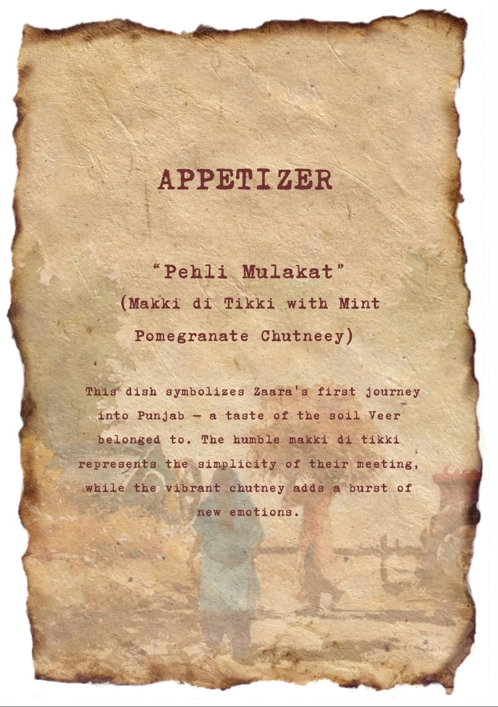
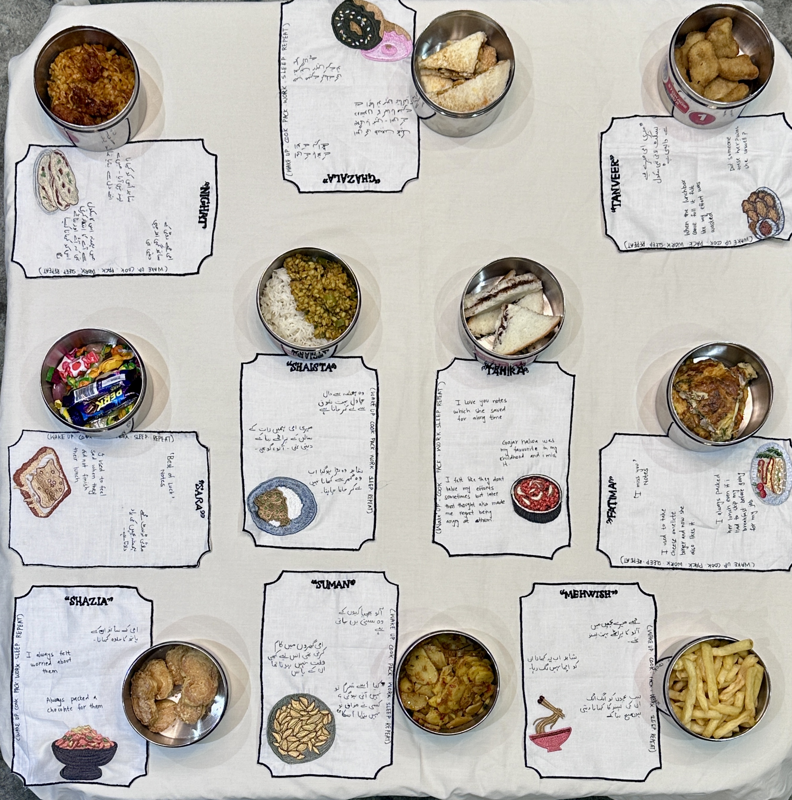
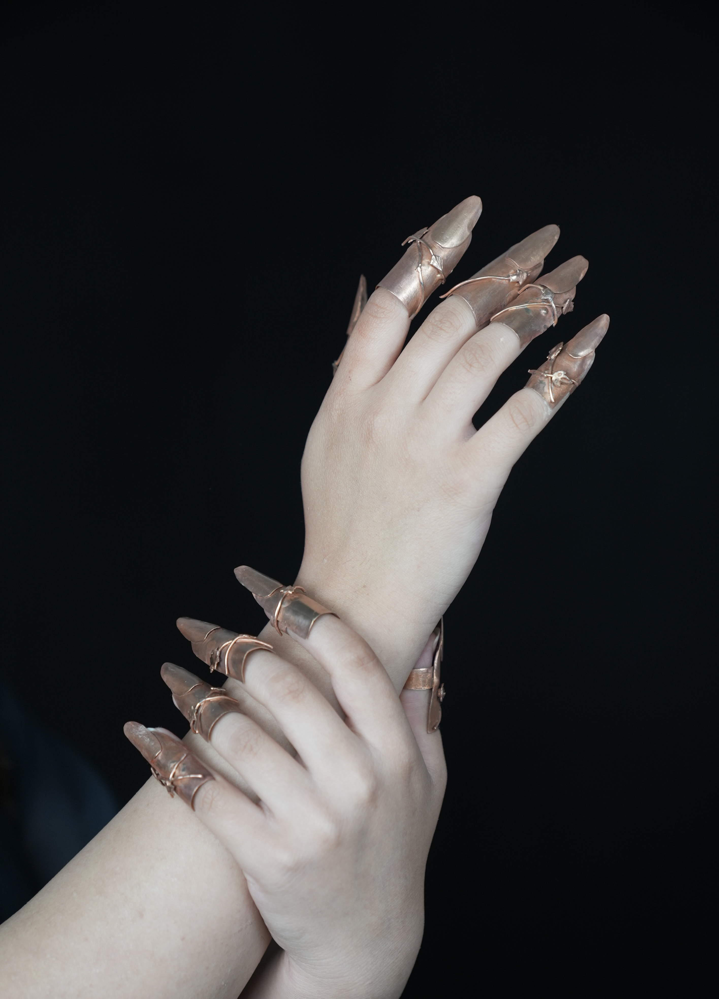
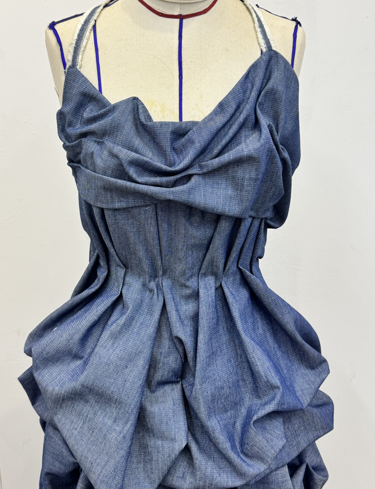
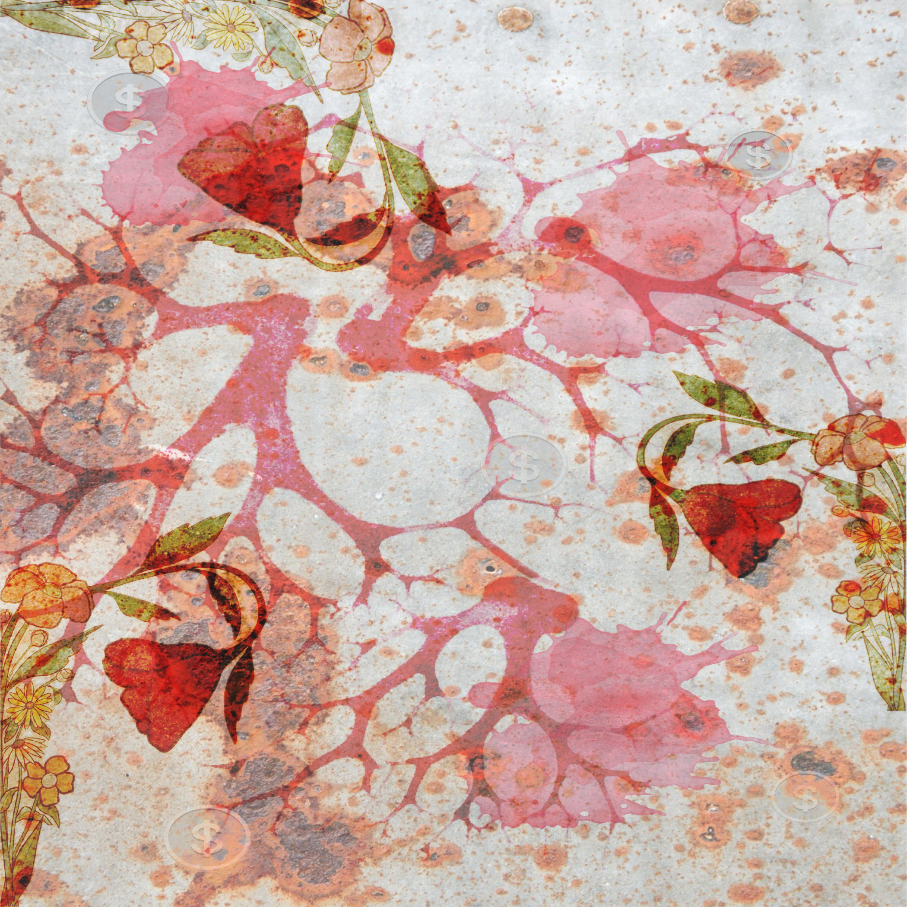
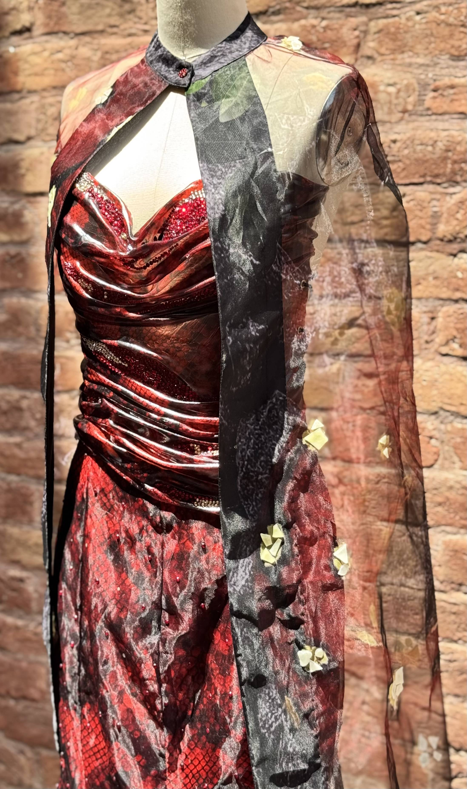
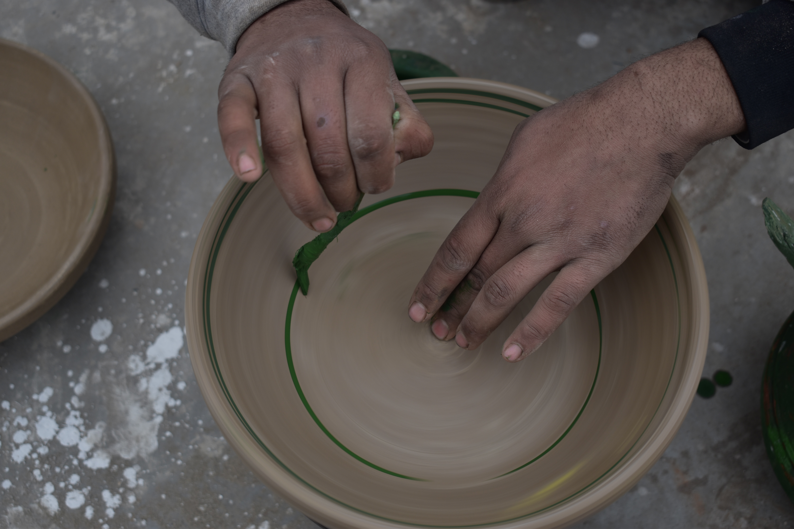

Fashion Design & Wearable Art — BNU Lahore
Fiza Sajjad
Sculpture · Draping · Textile · Photography
View PortfolioSelected Works
BNU Lahore — Collections & Projects
01
Veer Zaara — Gastronomic Storytelling
Food Design
02
Tiffin — Memory & Invisible Labor
Conceptual
03
Body Extension — Wearable Sculpture
Wearable Art
04
Experimental Draping Study
Draping Study
05
Old Lahore — Street Food Photography
Photography
06
Period Poverty — Fashion as Social Commentary
Textile Design
07
Serpent Queen — Narrative Fashion
Couture
08